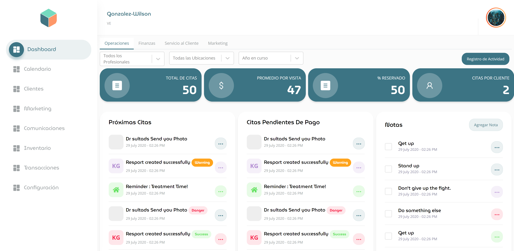
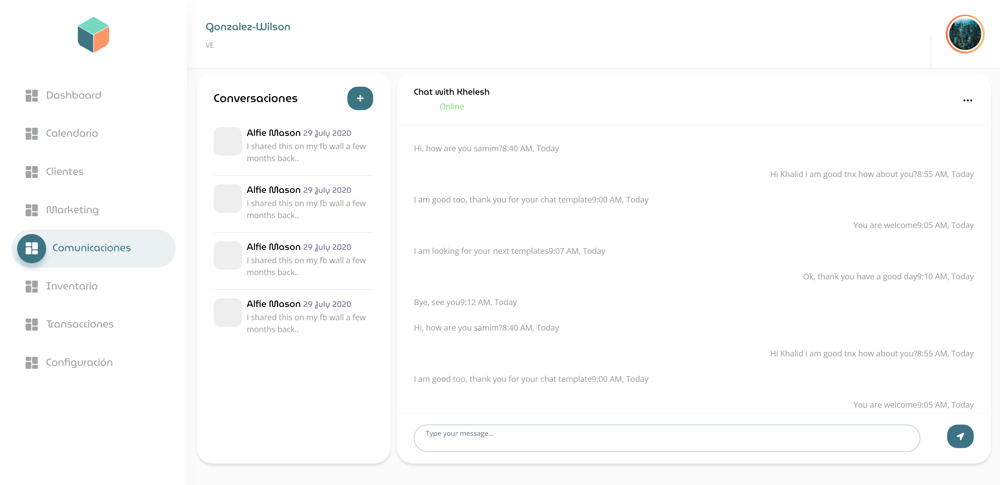
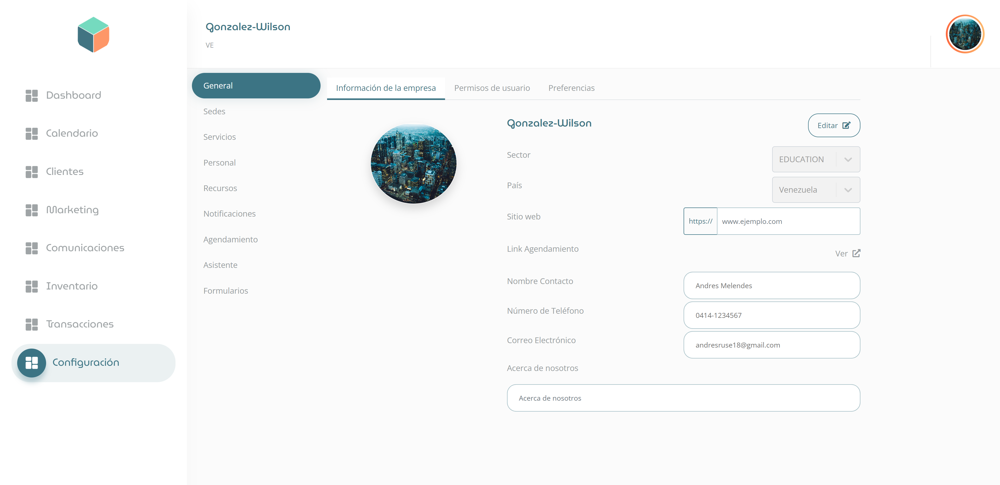
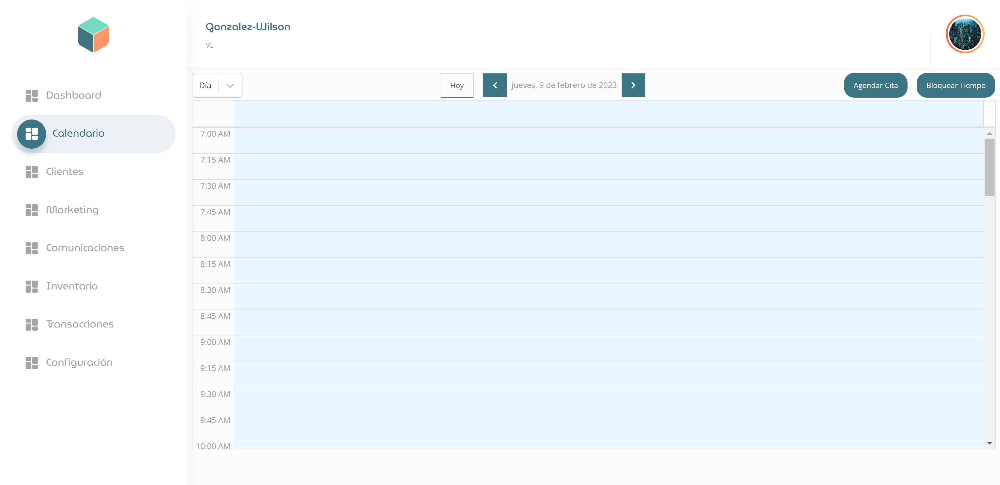

<div id="de_modal-content" class="container">
    <div class="row g-5">
        <div class="col-lg-8">
            <div class="row g-4">
                <div class="col-lg-12 item">
                    
                </div>
                <div class="col-lg-6 item">
                    
                </div>
                <div class="col-lg-6 item">
                    
                </div>
                <div class="col-lg-12 item">
                    
                </div>
            </div>
        </div>

        <div class="col-lg-4 de_project-info">
            <h3>Kumbio</h3>
            <p>
                Kumbio is focused on creating a dynamic and user-friendly platform for managing schedules and communications within
                a company.
            </p>
            
            <p>
                Kumbio project is a web-based platform built on a microservice architecture, utilizing Python and Django for the
                backend and TypeScript and React for the frontend. We're also using AAPanel for server management to ensure
                efficient and effective management of our server resources.
            </p>
            
            <p>
                Our project is built using a microservice architecture, specifically we have three main applications - the backend
                for admin, the backend for the calendar, and the backend for communications - all working together to create a
                seamless user experience.
            </p>
            
            <p>
                The admin backend service is responsible for managing user accounts and permissions, as well as handling
                administrative tasks such as creating new user groups and setting up workflows. The calendar backend service is
                responsible for managing schedules and appointments, while the communication backend service handles all internal
                communications within the platform.
            </p>
            
            <p>
                As the lead developer, my role is to ensure that these services are functioning together seamlessly and that the
                platform as a whole is working efficiently. I initially joined the company as a backend engineer, but I was quickly
                promoted to the lead developer position after just 8 months on the job. Additionally, I've been contributing to the
                frontend development using React and JavaScript, allowing me to operate as a kind of full-stack developer.
            </p>
           
            <div class="de_project-details">
                <div class="d-field">
                    <i class="fa fa-file-text-o"></i>Type: <span>Employer Project</span>
                </div>
                <div class="d-field">
                    <i class="fa fa-user-o"></i>Role: <span>Lead Developer</span>
                </div>
                <div class="d-field">
                    <i class="fa fa-file-text-o"></i>Status: <span>Under Development</span>
                </div>
                <div class="d-field">
                    <i class="fa fa-calendar-o"></i>Started: <span>May/2022</span>
                </div>
                <div class="d-field">
                    <i class="fa fa-external-link"></i>Preview: <span><a href="https://kumbio.com/">kumbio.com</a></span>
                </div>
            </div>
            <div class="spacer-30"></div>
        </div>
    </div>
</div>